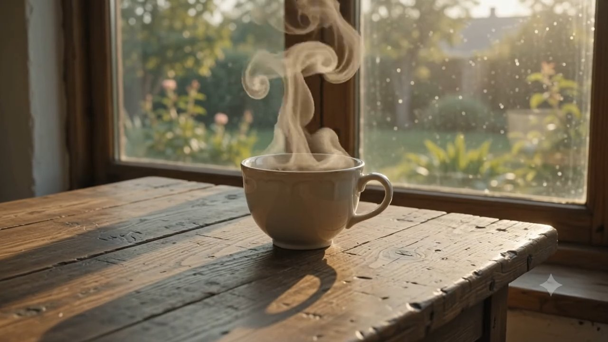

Шпаргалка
занятие 7
Презентации файлом, картинки (Images 2.5, вышла 8 сентября), визуальный стандарт. Плюсик «Добавить файлы и другое» → «Создать изображение» открывает галерею шаблонов.
Плюсик «+» → «Создание изображений»: Nano Banana 2, бесплатно. Редактура своего фото и серии в одном стиле. Видео в чате Gemini теперь только по подписке, поэтому третье окно.
vids.new → справа «ИИ-видео». Модель Omni, 720p со звуком, 10 секунд, фото оживает. Промпт только по-английски, около 10 роликов в месяц.
Презентация на тему: «[ваша тема]». Аудитория: [клиент / руководитель / команда / партнёр]. Содержание: проблема, кому это нужно, 5 аргументов, примеры из моей сферы, риски, следующий шаг. 10 слайдов. Стиль: деловой, минималистичный, крупные цифры, без рекламного шума. Отдай готовым файлом .pptx на скачивание.
Подготовь контент презентации для конструктора Gamma на тему: «[тема]». Для кого: [аудитория]. 10 слайдов. Для каждого: заголовок до 6 слов, 2–3 тезиса по одной строке, подпись к картинке одной фразой. Начни с проблемы, закончи следующим шагом. Без воды и общих слов. Выдай списком слайд за слайдом, без пояснений.
Проанализируй стиль этих слайдов. Опиши кратко, до 500 символов: цвета (HEX), шрифты, сетку, настроение. Напиши готовый промпт для ИИ-генератора презентаций, чтобы он повторил этот стиль на моём контенте.
Темы под сферы зала: откройте свою
- Описывайте, что хотите, а не чего не хотите
- Главное в начало промпта, конкретика вместо оценок: не «красивый», а «льняная рубашка, веснушки»
- Первый результат не финал: «теплее», «ближе», «фон чище», «текст крупнее»
- Русский текст на картинке пишите в кавычках: «баннер с надписью „Открытие 20 сентября“»

Профессиональное фото товара для интернет-магазина: [ваш товар] на светлом фоне с мягкой тенью, вид чуть сверху, детали в резкости. Студийный свет. Квадрат 1:1. Сделай 4 варианта с разных ракурсов.
Сделай из этого фото деловой портрет для сайта компании: тёмный пиджак, нейтральный офисный фон с лёгким размытием, мягкий студийный свет, спокойное уверенное лицо. Сохрани сходство, не меняй черты лица.
Квадратный пост для Instagram 1:1 для [ваша сфера]. Крупный заголовок «[до пяти слов]», под ним подзаголовок «[одна фраза]». Фон: [сцена из вашего дела], чистая композиция, место под текст слева. Стиль: современный, деловой. Цвета: [основной цвет] и белый.
Горизонтальный баннер 16:9 для [оффер, например: запись на консультацию]. Текст на картинке: «[заголовок]» и кнопка «[призыв]». Герой: [товар или человек]. Стиль: чистый, много воздуха, один акцентный цвет [HEX или название]. Без лишних надписей.
Инфографика 4:5 на тему «[тема]». Покажи 5 шагов процесса: [шаг 1], [шаг 2], [шаг 3], [шаг 4], [шаг 5]. Иконка и подпись у каждого шага, стрелки между ними. Цифры: [2–3 ключевые цифры]. Стиль: плоский, деловой, цвета [ваши], подписи по-русски.
Вертикальная обложка 9:16 для ролика про [тема]. Крупный заголовок «[до пяти слов]» в верхней трети, лицо или объект по центру, низ свободен под интерфейс. Контрастно, читается с телефона. Стиль: [ваш стиль].
Сделай серию из 5 картинок в одном стиле для карусели про [тема]: один герой, один свет, одна палитра [цвета]. На каждой крупный заголовок по-русски: 1) «[…]», 2) «[…]», 3) «[…]», 4) «[…]», 5) «[…]». Формат 4:5. Стиль одинаковый на всех.
Фотореалистичная визуализация [дома / зала / офиса]: [описание: одноэтажный дом с террасой, фасад из тёмного дерева и белой штукатурки], участок [где], вечерний свет, вид с угла, люди не нужны. Формат 16:9. Сделай 3 варианта фасада.
Афиша 4:5 для мероприятия «[название]». Дата «[дата]», место «[место]», строка «[для кого]». Настроение: [деловое / тёплое / энергичное]. Один визуальный герой: [что]. Текст крупно, читается с экрана телефона.
Мокап [футболки / худи / кружки / пакета] с моим принтом: [описание принта или приложите файл], цвет изделия [цвет], на нейтральном фоне, студийный свет, вид спереди и в три четверти. Квадрат 1:1.
Картинка «до и после» 16:9 для [услуга]: слева [состояние до], справа [состояние после], одинаковый ракурс и свет, тонкая линия раздела, подписи «ДО» и «ПОСЛЕ» по-русски.
Открытка 4:5 к [событие: день рождения, новый год, выпускной]. Тёплый акварельный стиль, [герои: семья, ребёнок, животное], надпись «[текст]» по-русски. Спокойные цвета, без перегруза.
Your task is to analyze all brand materials provided by the user and reconstruct
the brand's visual identity as accurately as possible.
The user may provide:
- website screenshots
- logo files
- social media designs
- advertisements
- presentations
- UI screenshots
- packaging
- brand graphics
- photography
- typography examples
- any other visual brand materials
Treat all uploaded materials as one connected visual system.
`,
main_goal: `
Analyze the provided brand materials and create TWO separate final deliverables:
1. A visually designed Brand Style Sheet generated as an IMAGE.
2. A machine-readable Brand Style Standard generated as a separate JSON FILE.
The two deliverables must describe the same visual system and must not contradict each other.
`,
analysis_rules: [
"Analyze all provided materials before generating the final outputs.",
"Identify repeated visual patterns instead of focusing on isolated design decisions.",
"Separate confirmed brand elements from inferred elements.",
"Do not invent brand rules that cannot reasonably be derived from the provided materials.",
"If an exact font cannot be identified, provide the closest visual match and clearly mark it as inferred.",
"If an exact color value cannot be determined, estimate the closest HEX value and mark it as estimated.",
"Distinguish systematic brand elements from accidental or one-off design choices.",
"Focus on reproducible visual rules.",
"Avoid vague descriptions such as 'modern', 'premium', 'stylish' unless they are supported by more specific visual characteristics."
],
analyze: {
brand_identity: [
"overall visual personality",
"brand mood",
"visual positioning",
"style keywords",
"degree of formality",
"visual complexity",
"visual consistency"
],
logo: [
"primary logo",
"secondary logo versions",
"symbol or icon",
"wordmark",
"logo proportions",
"preferred backgrounds",
"clear space",
"logo placement",
"logo color usage",
"incorrect logo usage"
],
colors: [
"primary colors",
"secondary colors",
"accent colors",
"background colors",
"text colors",
"neutral colors",
"gradients",
"color combinations",
"contrast principles",
"estimated HEX values"
],
typography: [
"primary typeface",
"secondary typeface",
"font families",
"font weights",
"font styles",
"headline typography",
"subheadline typography",
"body typography",
"caption typography",
"uppercase/lowercase usage",
"letter spacing",
"line height",
"alignment",
"typographic hierarchy"
],
layout: [
"grid structure",
"alignment",
"spacing",
"margins",
"padding",
"content density",
"white space",
"text-to-image ratio",
"visual hierarchy",
"section structure",
"asymmetry or symmetry",
"dominant composition rules"
],
graphic_language: [
"dominant shapes",
"geometry",
"corners and border radius",
"lines",
"frames",
"containers",
"cards",
"patterns",
"textures",
"decorative elements",
"gradients",
"shadows",
"glows",
"blur effects",
"graphic overlays"
],
icons: [
"icon style",
"stroke weight",
"filled vs outline",
"geometry",
"complexity",
"corner treatment",
"icon usage rules"
],
photography: [
"photographic mood",
"subjects",
"camera angles",
"framing",
"cropping",
"lighting",
"contrast",
"color grading",
"backgrounds",
"depth of field",
"human presence",
"product photography",
"environment",
"image treatment"
],
illustration: [
"illustration style",
"rendering style",
"level of realism",
"3D usage",
"line art",
"character style",
"technical graphics",
"diagram style"
],
ui_style: [
"buttons",
"cards",
"navigation",
"forms",
"inputs",
"tabs",
"badges",
"labels",
"icons",
"interactive elements",
"UI radius",
"UI borders",
"UI shadows"
],
visual_behavior: [
"how headlines are positioned",
"how images are cropped",
"how text overlays images",
"how accent colors are used",
"how attention is created",
"how visual hierarchy is built",
"how empty space is used"
],
prohibited_techniques: [
"colors that visually conflict with the brand",
"typographic styles that break the system",
"incorrect image treatment",
"incorrect logo usage",
"incorrect geometry",
"incorrect spacing",
"visual effects that do not belong to the brand"
]
},
workflow: [
"Step 1: Inspect all uploaded materials.",
"Step 2: Identify repeated visual patterns.",
"Step 3: Determine which patterns represent stable brand rules.",
"Step 4: Separate confirmed, inferred, and unknown information.",
"Step 5: Reconstruct the brand's visual system.",
"Step 6: Generate the visual Brand Style Sheet as an image.",
"Step 7: Generate the complete machine-readable JSON standard.",
"Step 8: Save the JSON standard as a separate .json file.",
"Step 9: Return both final files separately."
],
deliverable_1: {
name: "brand_style_sheet.png",
type: "IMAGE FILE",
instruction: `
Create one professional horizontal Brand Style Sheet based only on the analyzed
brand materials.
This must be a practical mini brand guideline, not an abstract inspiration moodboard.
`,
format: {
orientation: "horizontal",
preferred_aspect_ratio: "16:9",
background: "neutral or brand-appropriate",
presentation_style: "professional brand guideline / art direction board",
quality: "high-resolution, polished, presentation-ready"
},
required_sections: {
logo: `
Show the main logo and any verified variants visible in the provided materials.
Do not invent alternative logo versions.
`,
colors: `
Show the primary, secondary, accent, background, and text colors.
For each important color include:
- visual swatch
- HEX code
- functional role
`,
typography: `
Show the identified or closest matching fonts.
Include examples for:
- H1
- H2
- subtitle
- body text
- caption
Show relevant weights such as:
- Regular
- Medium
- Semibold
- Bold
- Italic
Only include styles actually supported by the source materials.
`,
graphic_language: `
Visually demonstrate:
- shapes
- geometry
- lines
- frames
- patterns
- textures
- icons
- gradients
- decorative elements
- border radius
- recurring graphic devices
`,
photography: `
Show the photographic direction including:
- lighting
- framing
- composition
- color treatment
- subjects
- backgrounds
- overall photographic mood
`,
layout: `
Show the dominant layout and composition principles:
- grid
- spacing
- margins
- hierarchy
- text/image balance
- alignment
- white space
`,
brand_mood: `
Describe the visual atmosphere using 3–7 precise style keywords.
`,
do_dont: `
Include concise examples or descriptions of:
DO:
visual techniques that belong to the brand.
DON'T:
visual techniques that clearly break the brand system.
`
},
visual_rules: [
"Preserve the actual visual personality of the source brand.",
"Do not redesign the brand.",
"Do not modernize the brand unless the source materials already demonstrate that style.",
"Do not add random decorative elements.",
"Do not add unsupported colors.",
"Do not invent fonts.",
"Do not invent patterns.",
"Do not turn the result into a generic Behance-style moodboard.",
"Prioritize clarity, hierarchy, and practical usability."
]
},
deliverable_2: {
name: "brand_style_standard.json",
type: "JSON FILE",
instruction: `
Create a separate machine-readable JSON file describing the reconstructed visual system.
This JSON must be detailed enough to be reused by:
- AI image generation systems
- AI design agents
- web designers
- UI designers
- presentation designers
- social media designers
- advertising designers
- developers
- creative automation systems
The JSON should function as the visual DNA of the brand.
`,
strict_rules: [
"Return valid JSON.",
"Do not use comments inside the JSON.",
"Do not use Markdown inside the JSON file.",
"Use null when a value cannot be determined.",
"Do not fabricate precise values.",
"Mark uncertain conclusions through confidence fields.",
"Use arrays for multiple rules.",
"Use HEX color values wherever possible.",
"Keep terminology consistent.",
"The JSON must correspond directly to the visual Brand Style Sheet."
],
required_schema: {
brand_identity: {
brand_name: null,
visual_summary: "",
brand_mood: [],
style_keywords: [],
visual_positioning: "",
formality_level: "",
complexity_level: ""
},
logo: {
primary_logo: "",
variants: [],
symbol: "",
wordmark: "",
preferred_backgrounds: [],
placement_rules: [],
clear_space: "",
color_rules: [],
usage_rules: [],
forbidden_usage: []
},
colors: {
primary: [
{
name: "",
hex: "",
usage: "",
confidence: ""
}
],
secondary: [],
accent: [],
neutral: [],
background: [],
text: [],
combinations: [],
gradients: [
{
name: "",
colors: [],
direction: "",
usage: ""
}
]
},
typography: {
primary_font: {
name: "",
classification: "",
confidence: "",
fallback: "",
weights: []
},
secondary_font: {
name: "",
classification: "",
confidence: "",
fallback: "",
weights: []
},
h1: {
font: "",
weight: "",
size_behavior: "",
case: "",
letter_spacing: "",
line_height: "",
alignment: "",
style_notes: ""
},
h2: {},
h3: {},
subtitle: {},
body: {},
caption: {},
hierarchy_rules: []
},
layout: {
grid: "",
columns: null,
alignment: "",
spacing_system: "",
margins: "",
padding: "",
content_density: "",
white_space: "",
text_image_ratio: "",
composition_style: "",
composition_rules: []
},
shapes: {
dominant_geometry: [],
border_radius: "",
borders: "",
line_style: "",
containers: [],
shape_rules: []
},
graphics: {
patterns: [],
textures: [],
icons: {
style: "",
stroke: "",
fill: "",
geometry: "",
complexity: "",
rules: []
},
illustration_style: "",
effects: [],
gradients: [],
decorative_elements: []
},
photography: {
overall_style: "",
mood: [],
subjects: [],
composition: "",
camera_angles: [],
framing: "",
cropping: "",
lighting: "",
contrast: "",
color_grading: "",
backgrounds: [],
depth_of_field: "",
people_style: "",
product_style: "",
environment: "",
image_treatment: "",
avoid: []
},
ui_style: {
overall_ui_language: "",
buttons: {
shape: "",
radius: "",
fill: "",
typography: "",
border: "",
effects: ""
},
cards: {
shape: "",
radius: "",
background: "",
border: "",
shadow: "",
spacing: ""
},
inputs: {},
navigation: {},
badges: {},
icons: {},
interaction_style: ""
},
content_design: {
headline_style: "",
text_density: "",
hierarchy: "",
emphasis_methods: [],
preferred_content_structure: [],
text_alignment: "",
image_text_relationship: ""
},
visual_principles: {
core_principles: [],
recurring_devices: [],
hierarchy_principles: [],
spacing_principles: [],
contrast_principles: [],
consistency_rules: []
},
do: [],
dont: [],
confidence: {
confirmed: [],
inferred: [],
estimated: [],
unknown: []
},
generation_prompt_core: {
purpose: `
Reusable brand visual DNA that can be inserted into future AI generation prompts
to make new materials visually consistent with the analyzed brand.
`,
prompt: ""
},
generation_rules: {
always_preserve: [],
preferably_use: [],
avoid: [],
prohibited: []
}
}
},
generation_prompt_core_rules: `
The generation_prompt_core.prompt field is extremely important.
Create a compact but highly specific reusable visual style description.
It should describe:
- color behavior
- typography
- spacing
- composition
- graphic language
- photography
- mood
- visual hierarchy
- geometry
- image treatment
- design restraint
- important prohibitions
It must be written so it can be appended to future prompts such as:
"Create an Instagram post..."
"Create a landing page..."
"Create an advertisement..."
"Create a presentation slide..."
"Create a website section..."
"Create a product visual..."
and make the new material visually consistent with the original brand.
`,
quality_control: [
"A professional designer should be able to recreate the visual identity using the outputs.",
"Another AI should be able to generate new brand materials using the JSON without seeing the original screenshots.",
"The Brand Style Sheet and JSON must describe the same visual system.",
"The result must describe specific visual rules instead of generic aesthetic adjectives.",
"Every conclusion must be grounded in the uploaded materials.",
"Do not hallucinate exact information that cannot be visually confirmed.",
"Preserve inconsistencies as observations when they genuinely exist in the source materials rather than artificially forcing perfect consistency."
],
final_output_requirements: {
number_of_files: 2,
files: [
{
filename: "brand_style_sheet.png",
format: "PNG",
content: "Visual Brand Style Sheet generated as an image."
},
{
filename: "brand_style_standard.json",
format: "JSON",
content: "Complete machine-readable brand visual standard."
}
],
mandatory_instruction: `
At the end of the task, provide TWO SEPARATE FILES.
FILE 1:
brand_style_sheet.png
This must be the generated visual brand guideline.
FILE 2:
brand_style_standard.json
This must be an actual downloadable JSON file, not merely JSON pasted into the chat.
Do not merge the two deliverables.
Do not replace the image with a textual description.
Do not return the JSON only as Markdown or plain chat text.
Create both final files separately.
`
}
};
Используй прикреплённый визуальный стандарт бренда. Сделай макет билборда 6×3 для [оффер, например: дома под ключ за 90 дней]. Текст по-русски: заголовок до 6 слов, одна выгода, телефон [номер] крупно, логотип в углу. Один визуальный герой: [что]. Соблюди цвета, шрифты и правила стандарта, ничего не добавляй от себя.
Используй прикреплённый визуальный стандарт бренда. Разработай информационную карусель на 10 слайдов формата 4:5 про [продукт или тема]. Структура: 1 обложка с заголовком, 2–9 по одному тезису на слайд с коротким текстом по-русски, 10 финал с призывом «[призыв]». Один стиль на всех слайдах, единая сетка и типографика из стандарта.
По прикреплённому визуальному стандарту сделай вертикальную обложку 9:16 для ролика про [тема]. Заголовок «[до пяти слов]» в верхней трети, [герой] по центру, низ свободен под интерфейс. Читается с телефона.
По прикреплённому визуальному стандарту сделай пост 1:1 на тему «[тема]». Заголовок «[…]», подзаголовок «[…]», визуальный герой [что]. Место под текст по правилам стандарта.
По прикреплённому визуальному стандарту оформи слайд 16:9 «[заголовок]» с тремя тезисами: [1], [2], [3]. Цифра [X] крупно. Сетка, шрифты и цвета из стандарта.
По прикреплённому визуальному стандарту сделай листовку А5 для [услуга]: заголовок, 3 выгоды, контакты [телефон, сайт], QR-плейсхолдер. Отдельно визитку 90×50: имя [имя], должность [должность], телефон, сайт, логотип. Оба макета в одном стиле.
По прикреплённому визуальному стандарту сделай баннер 16:9 для [оффер]. Заголовок «[…]», кнопка «[призыв]», герой [что]. Три варианта композиции, стиль один.
По прикреплённому визуальному стандарту нарисуй первый экран лендинга для [оффер]: заголовок, подзаголовок, кнопка «Оставить заявку», визуальный герой [что], меню сверху. Десктоп 16:9 и мобильная версия 9:16.
По прикреплённому визуальному стандарту оформи кейс одной картинкой 4:5: клиент [кто], задача [что], решение [что], результат [цифра]. Блоки «было» и «стало», цифра крупно.
По прикреплённому визуальному стандарту сделай инфографику 4:5 «[тема]»: 5 шагов [перечислите], иконка и подпись у каждого, 2–3 ключевые цифры [какие]. Подписи по-русски.
В базу знаний загружен файл brand_style_standard.json: это визуальный стандарт нашего бренда. Каждый раз, когда я прошу картинку, баннер, слайд, пост или любой визуал, сначала прочитай поле generation_prompt_core и правила do и dont, и генерируй строго по ним. Если задача противоречит стандарту, скажи об этом до генерации.

Что: студия видео и картинок с моделями Omni, Veo 3.1 и Nano Banana Pro: текст в видео, фото в видео, «ингредиенты» (ваш товар или человек в кадре), продление ролика, монтаж фразами, персонажи и аватары. Зачем: когда 10 секунд из Vids мало и нужен ролик из нескольких сцен с одним героем. Кому: блог, школа, реклама, презентация объекта. Цена: без подписки 50 кредитов в день, с подпиской больше.
Что: музыкальная студия с ИИ-продюсером: целые песни и музыка под ролик по описанию. Зачем: фон для рилса, презентации и видео без вопросов об авторских правах, джингл для бренда. Кому: всем, кто снимает контент и делает эфиры. Цена: бесплатно с лимитами.
Что: вставили адрес сайта, он вытащил «ДНК бизнеса» (цвета, шрифты, тон, визуал) и генерит посты для Instagram и Facebook, баннеры, картинки для сайта, фотосессию товара из обычного фото. Правки словами: «текст крупнее». Зачем: контент под свой стиль без дизайнера. Кому: у кого есть сайт. Ограничения: только английский, 18+, России в списке стран нет: VPN. Бесплатно. Наш визуальный стандарт делает то же, но гибче: любые материалы и любые задачи.
Что: описали словами или нарисовали от руки, получили экраны приложения или сайта, которые можно править и отдать разработчику. Зачем: показать подрядчику, как должен выглядеть ваш сервис, до оплаты. Прототип личного кабинета, приложения для клиентов, сайта. Кому: кто заказывает разработку или собирает в Codex. Бесплатно с лимитом на месяц.
Что: мини-приложения из ИИ без кода: описали словами цепочку «взять текст → сделать пост → перевести → отдать», получили кнопку, которой можно поделиться ссылкой. Зачем: превратить повторяющийся промпт в инструмент для команды. Кому: руководителю, который хочет раздать сотрудникам готовые ИИ-кнопки. Бесплатно, эксперимент.
Что: доска идей: накидали картинок и слов, ИИ дорисовывает варианты, развивает и меняет. Зачем: мудборд для ремонта, коллекции, интерьера, упаковки, стенда. Кому: бренд одежды, ИЖС, семья перед ремонтом. Бесплатно, не во всех странах: VPN.
Что: ваш блокнот с занятия 4, выпускник Labs (начинался как эксперимент Project Tailwind). Отвечает только по вашим документам, делает презентации, аудио- и видеопересказы, тесты, ищет источники сам. Зачем: база знаний, которая не выдумывает. Кому: всем. Бесплатно.
Что: вайб-кодинг от Google: приложение или сайт из описания, публикуется одной кнопкой. Брат Bolt и Codex. Зачем: калькулятор для клиентов, форма заявки, мини-сервис. Кому: кто уже собирал проект в Codex на занятии 5. Бесплатно с лимитами.
Что: любой материал (статья, глава, конспект) превращается в учебник под вас: с объяснениями, схемами, квизами. Зачем: быстро разобраться в новой теме, обучить сотрудника. Кому: психолог и тренер (учебные материалы), родитель (школа), руководитель (онбординг). Бесплатно, английский.
Что: агент-программист, который сам чинит и дописывает код в вашем проекте, пока вы заняты. Зачем: если проект из Codex живёт на GitHub, Jules доделывает задачи в фоне. Кому: только тем, кто пошёл в разработку. Бесплатно с лимитом.
Что: игровые миры, которые генерируются на ходу по описанию. Зачем: пока игрушка, но через год это тренажёры для сотрудников и презентации-прогулки по объекту. Кому: посмотреть, чтобы понимать, куда идёт визуал. Бесплатно.
Что: не из Labs, но из той же семьи: видеоредактор Google с генерацией роликов, аватаром, закадровым голосом и шаблонами. Зачем: собрать ролик для соцсетей или инструкцию для сотрудников из слайдов и сгенерированных сцен. Кому: всем. Бесплатно с лимитом.